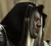

Récits Légendes de Kirin Tor Personnages Célébrités Guildes
Outils Calendrier Calendrier Illustré Mod d'interface
Informations Historiens FAQ Liens Crédits
Les légendes de Kirin Tor
Mauldred
Mail : ==> Afficher les personnages de Mauldred
Mauldred
 Age : 35
Age : 35
Sexe : Homme
Race : Humain
Faction : Alliance
Formation : Paladin
Description : *AAAARGH !*
"Dangorn, qu'est-ce que c'était ?
- Ne bouge pas, Cunégonde, je vais voir..."
Le jeune paysan tira une courte dague de son ceinturon, une dague-coupe-papier qu'il avait eu pour son anniversaire. Soudain quelquechose bougea dans les fourrés. Dangorn s'en approcha furtivement. Le buisson continuait à bouger et à faire des gargouillis étranges.
Une main décharnée essaya d'attraper le cou du jeune homme. Dangorn se dégagea à temps, et trancha le membre. La main putréfiée tomba au sol, et un zombie manchot sortit du buisson. Cunégonde cria. Dangorn se jeta sur le mort-vivant et avec la dague lui lacéra ses restes. A la fin du combat, Dangorn avait du sang coagulé partout sur sa chemise et les bras complètement griffés par les ongles du zombie, mais ce dernier ne bougeait plus. Le garçon aux cheveux blancs se retourna : Cunégonde était partie.
Entendant des cris et des bruits de combats du côté du village, Dangorn courut vers sa maison : trop tard, le feu avait déjà embrasé le domicile familial, ainsi que d'autres maisons, et les responsables du désastre avaient disparu. Après avoir éteint le feu en partie à l'aide d'un seau et du puits le plus proche, le jeune Dangorn tenta de retrouver ses parents. Hélas, ils avaient succombé tous les deux. Beregorn avait dû se défendre contre ses mystérieux agresseurs, son corps arborait de profondes blessures, et sa tête fut trouvée un peu plus loin, près d'une faux ensanglantée. Alicia fut retrouvée écrasée sous une poutre calcinée.
Dangorn était au comble du désespoir : à cause de sa négligence il n'avait rien pu faire pour sauver ses parents. S'il n'était pas parti roucouler dans la forêt avec Cunégonde, la fille du forgeron, il aurait pu les défendre. Triste à mourir et furieux contre lui-même, il se mit à jeûner...
Son désespoir était tel que pendant douze jours et douze nuits il refusa toute nourriture et toute boisson, voulant sûrement se laisser mourir. Au bout de cette période de jeûne, il eut soudain une révélation, lorsqu'il vit un Paladin, engoncé dans son armure brillante, en train de rassurer les habitants du village qui avaient été touchés par la catastrophe.
Il cessa de jeûner, et déclara une promesse sur la tombe de ses parents : "Je deviendrai un Paladin, défenseur de l'Ordre et de la Justice, et ainsi je vous vengerai, je vengerai Andorhal, je vengerai Lordaeron...".
C'est ainsi que Dangorn Mauldred, plein de rancoeur, parcouru les Royaumes de l'Est à la recherche d'un monastère de la Sainte Lumière Sacrée afin de commencer un entraînement. Entre-temps, il fit la rencontre de Floli Meuh-Naïrolfas la guerrière elfe de la nuit qui avait été élevée par des taurens, et dans une auberge, alors qu'il faisait une halte, il entendit parler de la fameuse Confrérie des Mercenaires du Reikland...
(Toute l'histoire sur http://www.wow-roleplay.com/vb/showthread.php?t=104 )
Plus d'infos sur Mauldred >>>
Lire les 8 récits de Mauldred >>>
==> Voir la galerie d'images de Mauldred